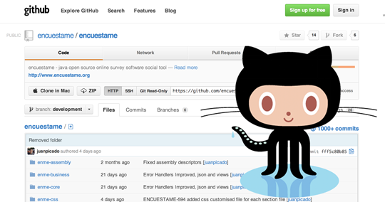

Social Survey CMS
A powerful control management system, organize your own unlimited surveys with unlimited options, share them, multiple users and roles, multilanguage support, integration with multiple social network.
Download 1.146-FINALOpen Source Project
Is free, open source, and always will be, Licensed as Apache License 2.0, hosted on GitHub, Source Force and Google Code, Encuestame is based on Java and Dojo Toolkit.
Get Source

Try the Demo
If you'd like to see a working survey, you could create your own survey, share it your beautiful creation and try the complete list of features.
Go